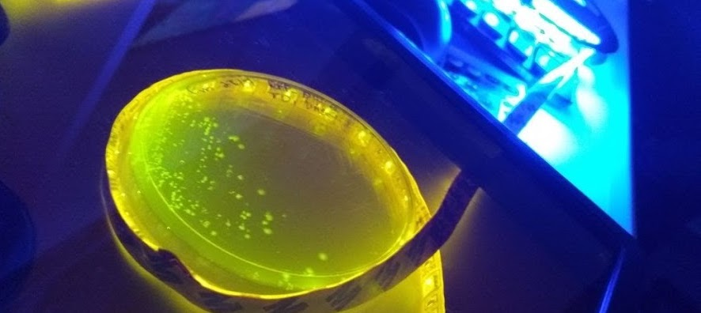

System and Synthetic Biology Group - SSBLab
Sobre o SSBLab
O SSBLab é formada por duas unidades centrais. O Núcleo de Biologia Sintética está sediado no Departamento de Biologia Celular e Molecular da FMRP-USP e é chefiado pelo Prof. Rafael Silva-Rocha. O Núcleo de Metagenômica está sediado no Departamento de Biologia da FFCLRP-USP e é chefiado pela Profa. María Eugenia Guazzaroni. Ambas as unidades, embora fisicamente separadas, trabalham juntas para gerar uma nova aplicação combinando metagenômica e biologia sintética.
Nossa missão é: "Desenvolver abordagens de Biologia Sintética e de Sistemas para entender a vida e construir microrganismos para novas aplicações."
Venha fazer parte deste time!
Linhas de Pesquisa:
- To understand the complexity of gene regulation in bacteria using synthetic promoters
- To construct novel promoter elements to engineer filamentous fungi for biofuel production.
- To understand decision making in the opportunistic pathogen Pseudomonas aeruginosa.
- To use Synthetic Biology to engineer yeast for wast valorization and fine-chemical production.
- To develop new computational tools for the identification of promoters in genomes/metagenomes